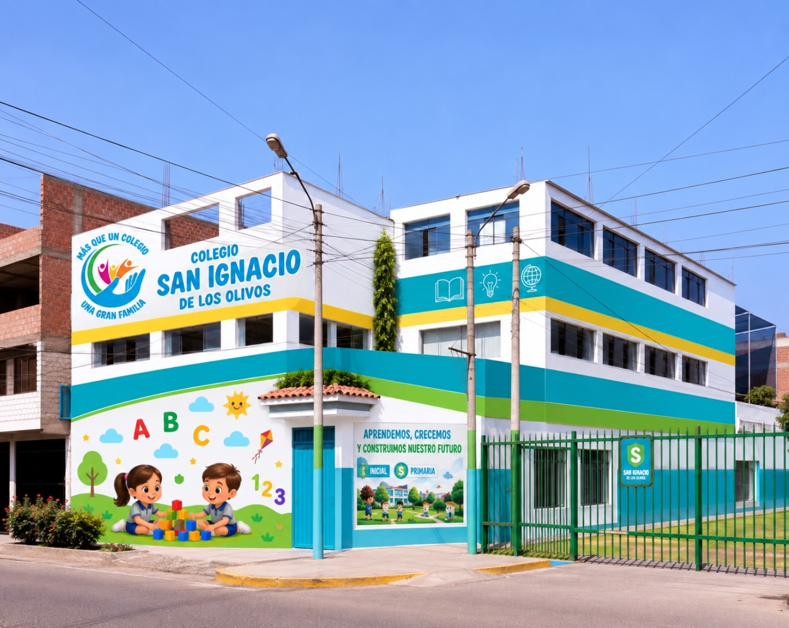

Un espacio donde nuestros niños aprenden, crecen y construyen su futuro con valores, alegría y acompañamiento.
Queremos que cada niño se sienta acompañado, valorado y motivado para descubrir todo lo que puede lograr.
Fortalecemos aprendizajes, habilidades sociales, autonomía, creatividad y valores.
Experiencias significativas y un ambiente seguro, cercano y estimulante.
Desarrollamos competencias para enfrentar nuevos retos con confianza.
Aprendizaje activo, exploración, lenguaje, psicomotricidad, creatividad y convivencia.
Consultar InicialConsolidamos competencias académicas y personales mediante proyectos y experiencias.
Consultar PrimariaActividades que despiertan el interés por aprender.
Experiencias dinámicas y comunicativas para acercarse al idioma.
Disciplina, trabajo en equipo, hábitos saludables y confianza.
Espacios para expresarse, crear, imaginar y descubrir talentos.
Recursos tecnológicos para enriquecer el aprendizaje.
Formamos niños respetuosos, responsables y solidarios.
Un breve video institucional creado con la imagen de nuestro colegio.
Escríbenos por WhatsApp para conocer niveles, vacantes y proceso de admisión.
Tu próxima visita puede comenzar con un mensaje.